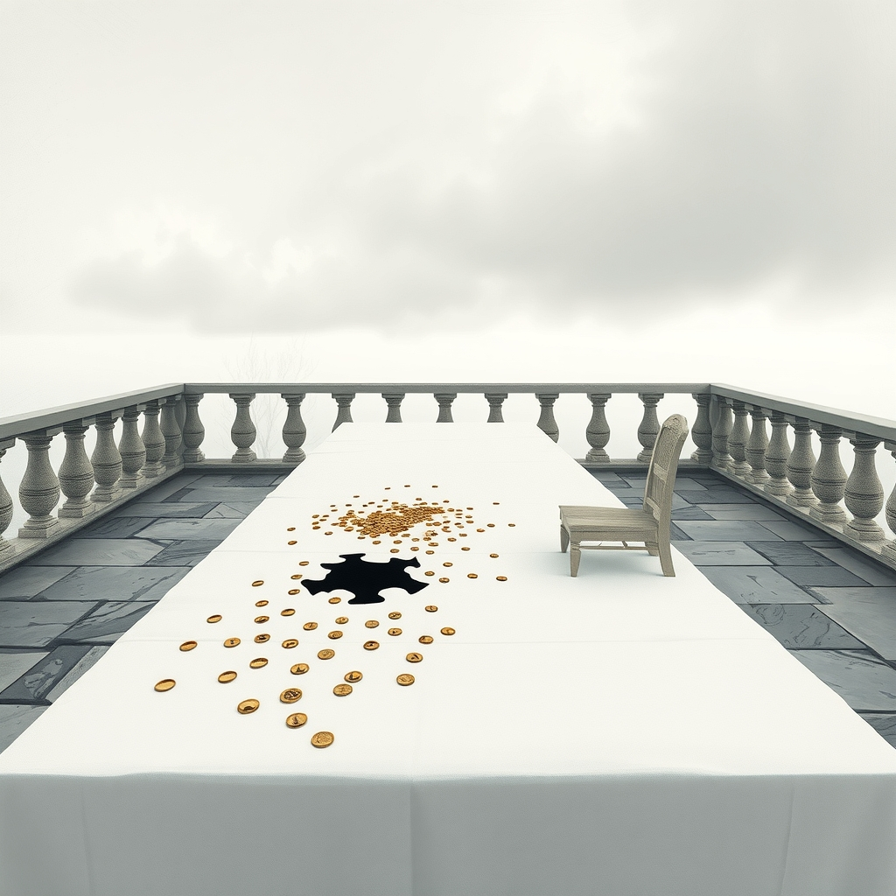
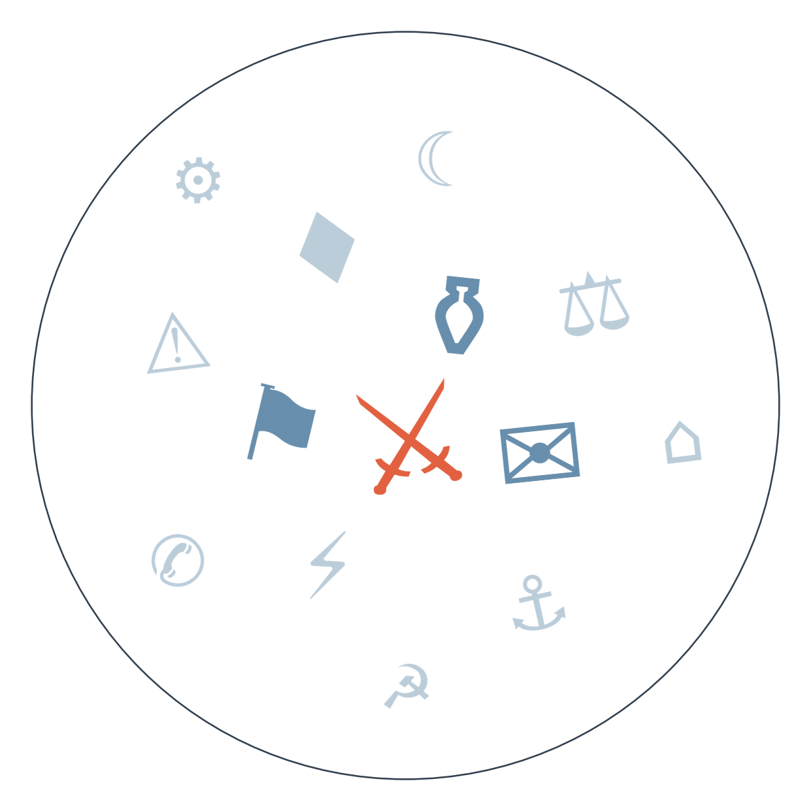

Ранковий бріф · огляд світової преси

Нічний удар США по цілях біля Ормузької протоки влучив і по весіллю в іранському Сіріку — за даними іранського МОЗ, загинуло 18 людей, включно з дитиною, Пентагон цифру не підтверджує. Іран відповів ударами по базах у Кувейті, Трамп пообіцяв бити "будь-коли" і запропонував перейменувати протоку на свою честь — деескалації не видно, натомість зростає ризик залучення третіх країн Затоки, чий танкер уже постраждав.
Гібридна війна Росії проти Європи набула нової конкретики: біля пошкодженої підстанції в Німеччині знайшли шість пускових установок, слідство встановило особи двох підозрюваних із зв'язками з РФ, а Москва у відповідь закрила Гете-інститут. Одночасно данська розвідка повідомила про підготовлені Росією плани саботажу проти оборонної промисловості з вербуванням посередників онлайн — це вперше показує, що загроза виходить за межі Німеччини й охоплює Скандинавію.
Мальтійський суд виправдав бізнесмена Йоргена Фенека, якого звинувачували в замовленні вбивства журналістки-розслідувачки Дафни Каруани Галізії у 2017 році — останнього підсудного у справі, яка колись обвалила уряд Мальти. Родина назвала вирок "провалом країни", а питання "хто саме замовив вбивство" залишається без відповіді дев'ять років по тому — і це б'є по репутації всього ЄС як простору верховенства права.

Сюжет 1: удар по весіллю в Сіріку під час ескалації США-Іран.
Замовчують: жодна сторона не називає незалежно перевірену кількість жертв — цифра 18 від іранського МОЗ лишається неперевіреною, Пентагон нічого не підтверджує, а сама природа цілі лишається неверифікованою.
Чому розходяться: Al Jazeera фінансується Катаром, зацікавленим підважити легітимність дій США на Близькому Сході; Al Arabiya належить саудівському медіахолдингу, союзному Вашингтону в стримуванні Ірана, тому переносить увагу на загрозу з боку Тегерана; SCMP не має прямого інтересу в конфлікті й обирає людяну подачу; німецькі ділові видання дистанціюються від моральної оцінки, бо для їхньої аудиторії важливіші наслідки для цін на нафту.
Сюжет 2: виправдання у справі вбивства Дафни Каруани Галізії.
Замовчують: жоден полюс не називає інших фігурантів корупційних мереж, які могли стояти за замовленням, і не порушує питання можливого тиску на слідство з боку мальтійської еліти.
Чому розходяться: британське видання тримає дистанцію нейтральної судової хроніки; Al Jazeera використовує справу як приклад слабкості верховенства права в ЄС; нідерландське видання ближче до європейської журналістської солідарності з убитою колегою; німецьке видання розглядає це як питання інституційної довіри всередині союзу, бо Мальта — повноправний член ЄС; офіційна мальтійська позиція натомість боронить легітимність самого рішення суду.
Гібридний тиск розширюється на Скандинавію: біля пошкодженої підстанції в Німеччині знайдено шість пускових установок і встановлено особи двох підозрюваних зі зв'язками з РФ → Москва у відповідь закрила Гете-інститут → данська розвідка попереджає про плани саботажу проти оборонпрому вже за межами Німеччини → може закритися новим пакетом санкцій ЄС або ударами по енергетиці України.
Ставка ФРС під тиском: Уорш на Джексон-Хоулі натякнув на можливе підвищення ставки → Бессент попередив про наслідки розпродажу японських активів для американських домогосподарств → попередження пролунало вдруге поспіль перед засіданням → 12 вересня FOMC ухвалює рішення, що вплине на глобальні ринки облігацій.
Нафта піднялась вище 96 доларів за барель на тлі нового обміну ударами США-Іран, ринки закладають подальшу ескалацію в Затоці.
Нідерланди, за повідомленнями місцевих ЗМІ, перевезли 86 тонн золота зі сховищ у США й Канаді до Лондона — крок на тлі геополітичної недовіри до зберігання резервів за океаном.
Аргентина готує приватизацію 6 000 км доріг з податковими пільгами на тлі, за оцінками галузевих аналітиків, спаду промисловості на 12% з 2023 року і втрати 275 тисяч робочих місць.
Volkswagen оголосив про закриття чотирьох заводів у Німеччині на тлі загального спаду промисловості в країні.
Поки Der Spiegel і Die Welt рахують наслідки закриття консульства й можливі санкції, Bild уже шукає зв'язок дрона в Лейпцигу з "справами в Польщі та Сербії" — і тут же публікує тижневий гороскоп для Риб і Водолія, ніби нічого не сталося.
Daily Mail ставить новину про стрілянину в Міннеаполісі в одну стрічку з анонсом другого туру Oasis і фотополюванням на Клуні у Венеції — трагедія й шоу-бізнес живуть на рівних правах.
Швейцарський Blick тим часом розганяє історію про "злочинність неєвропейців", що перетворює туристичну пам'ятку Рима на "зону небезпеки" — тему, яку якісна швейцарська преса взагалі не підхоплює.
Норвегія заарештувала російське судно "Профессор Молчанов" на Шпіцбергені за позовом української компанії "Нафтогаз", за заявою компанії, на суму 4,22 млрд доларів — прецедент екстериторіального арешту російських активів на користь українських компенсаційних вимог.
ЄС розглядає виділення мільярдів євро на перехоплювачі PAC-3 Patriot для України на тлі вичерпання запасів і зростання загрози реактивних дронів "Герань" — це напряму впливає на протиповітряну оборону найближчих місяців.
Відставка міністра оборони Естонії через скандал із якістю снарядів, закуплених для України, — ризик для довіри партнерів до майбутніх контрактів на постачання зброї.
Реальна статистика жертв повені в Гімалаях і досі неповна: тибетська сторона окремих цифр не публікує, тоді як увага світових медіа зосереджена на порятунку іноземних туристів — мовчить насамперед китайська сторона, бо публікація власної статистики з Тибету є для Пекіна незручною темою.
Стрілянина між ГУР і СБУ в Києві висвітлена лише українськими виданнями (Babel); міжнародна преса цю історію не підхопила, попри те що вона показує внутрішню напругу серед спецслужб воюючої країни — мовчать закордонні редакції, бо сюжет не вписується в звичний наратив єдності союзника.
Точна кількість жертв удару по весіллю в Сіріку лишається неверифікованою жодною зі сторін: Пентагон не коментує, а редакції переказують або іранську, або американську версію без незалежного розслідування на місці — мовчать офіційні джерела обох урядів.
низька впевненість. Фінляндія розслідує можливе порушення повітряного простору невідомим дроном — можливий новий епізод серії гібридних інцидентів у Північній Європі. На основі: одне джерело (Expresso, переказ).
середня впевненість. Пекін шукає альтернативні торгові маршрути через Єгипет і Центральну Азію — сигнал стратегічного розвороту до самодостатності на тлі тарифного тиску Заходу. На основі: два незалежних видання-спостерігачі (SCMP, Trivium China).
Рахунок: 1 з 3 (базово 1 з 3) — референдум в Ісландії не справдився, дата похорону короля Норвегії справдилась достроково, спільна заява на ШОС щодо війни в Україні чи санкцій не прозвучала.
Наші:
ЄС ухвалить продовження санкцій проти Росії попри блокаду Словаччини — до 17.09.2026
Саудівська Аравія офіційно звернеться до Ради Безпеки ООН щодо удару по своєму танкеру — до 10.09.2026
Уряд Естонії оголосить кадрові чи процедурні зміни в оборонному відомстві після відставки міністра — до 17.09.2026
Демократи Палати представників внесуть законопроект-протидію перейменуванню Lake Ontario на "Lake America" — до 08.09.2026
Сербія проведе державний похорон Ратка Младича з військовими почестями попри протести правозахисників і критику ЄС — до 10.09.2026
ФРС на засіданні FOMC підвищить ставку, попри те що це не є базовим сценарієм — до 12.09.2026
Німеччина оголосить додаткові санкції проти Росії понад закриття консульства в Бонні — до 05.09.2026
США та Іран проведуть ще один прямий обмін ударами — до 16.09.2026
Тристоронній саміт Путін-Трамп-Зеленський не відбудеться — до 16.09.2026
Кажуть інші:
Генпрокурор РФ Гуцан: пропонує запровадити мораторій на перевірки постраждалого від ударів ЗСУ бізнесу — з 2027 року; сигнал можливого пом'якшення внутрішньої політики щодо бізнесу.
Базова лінія у прогнозах. Відсоток «базово» — це ймовірність події за інерцією, якщо ніхто нічого не робитиме й нічого не зміниться. Друге число — наша впевненість. Прогноз має сенс лише тоді, коли ці числа розходяться: збіг означає, що ми просто описали поточний стан.
Відсотки в карті уваги. Частка країни в денному обсязі зібраних матеріалів. Не показник важливості події, а показник того, скільки місця країна зайняла в новинному потоці за добу. Різкий стрибок частки зазвичай означає, що в країні щось відбувається.